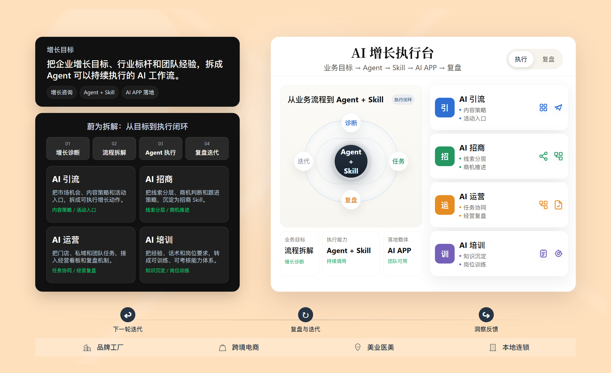
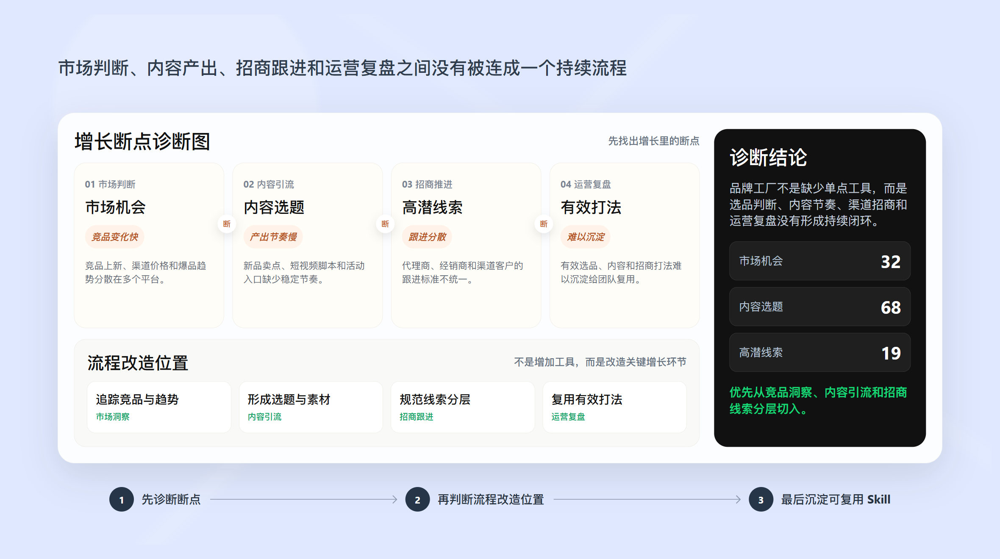
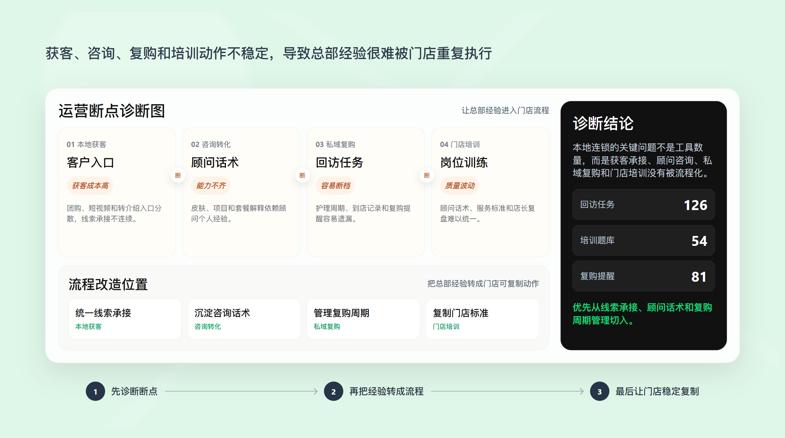
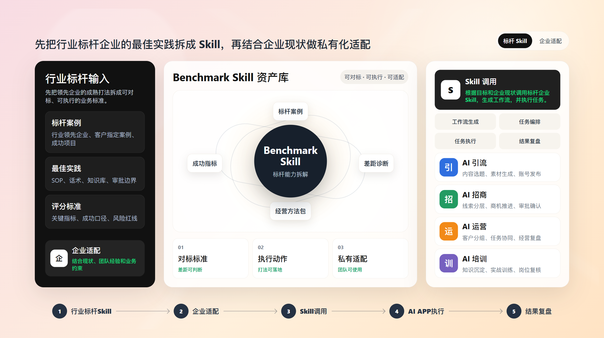
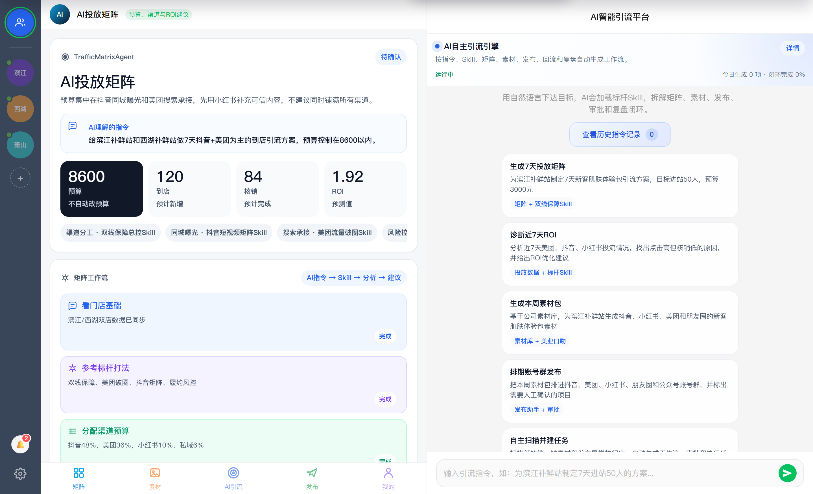
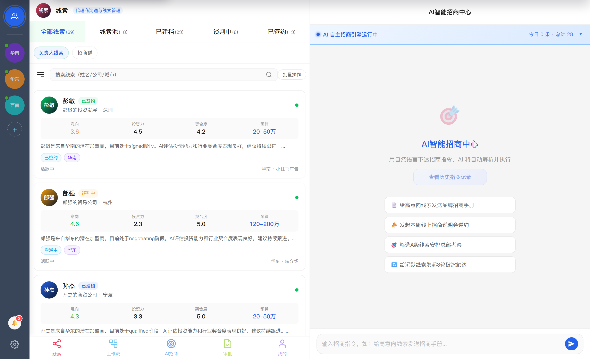
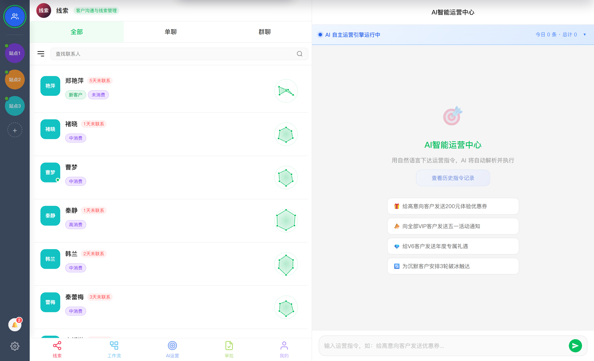
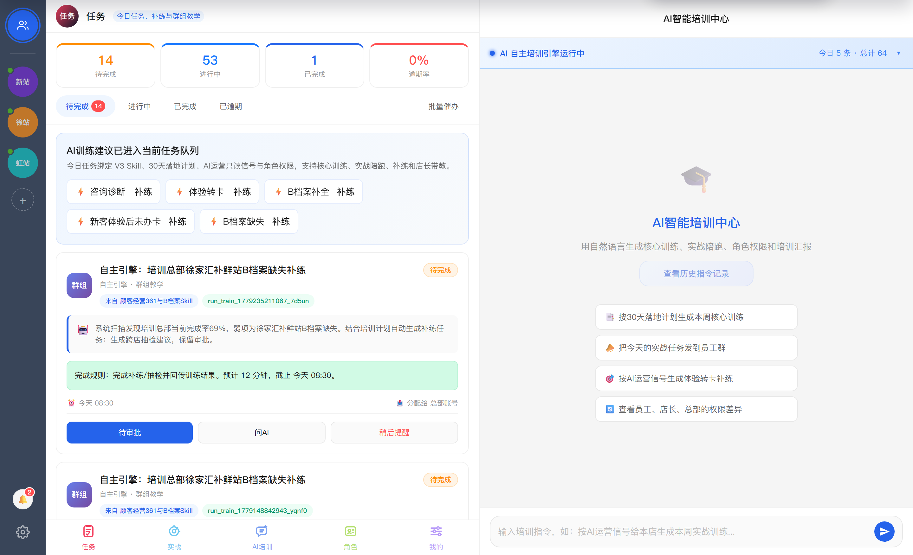

把行业最佳实践，变成 AI 持续执行的增长动作
蔚为把行业标杆方法封装成可调用的 Skill，再由 Agent 落到 引流、招商、运营和培训动作中，让增长方法真正落到执行里。

增长断点，常常出在关键判断没有变成下一步动作
品牌业务断在判断、内容、跟进和复盘接不上， 连锁业务断在总部经验落不到每一次获客、咨询、复购和训练。

先找出增长里的断点
对品牌工厂和跨境电商来说，问题通常不是没有工具，而是市场判断、内容产出、招商跟进和运营复盘之间没有被连成一个持续流程。

让总部经验被门店重复执行
对美业医美和本地连锁来说，真正难的是顾问、店长、客服和加盟商的动作不稳定，AI 要进入获客、咨询、复购和培训流程。
把行业最佳实践适配成 Skill，再交给 Agent 执行
蔚为先把行业标杆方法拆成流程、判断、话术、SOP 和指标， 再结合企业业务适配成 Skill，让 Agent 在业务增长流程中持续调用。

拆解美妆连锁案例，看 AI 增长方案如何落地
以美妆连锁为例，看蔚为如何从用户入口和信任建立切入， 再把 AI 测肤、Skin ID、首购、私域复购和招商复制接成执行链路。

先找到增长切口，再形成实施链路
对美妆连锁来说，AI 增长方案不是只接一个环节，而是围绕获客、咨询、复购、招商和培训逐步形成协同。
四个 AI APP，覆盖业务增长关键流程
从引流、招商到运营和培训， 让行业 Skill、AI Agent 和执行界面进入关键增长流程。

从投放矩阵到账号群发布的增长作战台
AI 引流把预算、渠道、素材和发布组成一套可执行的获客闭环。

从线索经营到招商审批的签约推进系统
AI 招商围绕线索阶段、客户档案、会务工作流和审批确认推进签约。

从客户线索到 SOP 执行的运营中枢
AI 运营覆盖客户线索、运营工作流到任务审批与执行的运营全流程。

从训练任务、实战陪练到角色能力复制
AI 培训围绕能力地图、训练任务和角色能力，把优秀经验复制到团队里。
不同企业，先从不同增长流程开始
蔚为不把所有企业套进同一个 AI 模板， 而是先找到最适合 AI 化、最高频、最容易复盘的业务流程。


不必一次完成 AI 转型，先跑通一条流程
第一阶段不追求大而全，先选择高频、重复、可标准化、能复盘的流程， 让团队看到 AI 真正进入业务。

品牌工厂可以先做
- 每周自动整理竞品上新、价格变化和内容热点。
- 围绕新品和活动生成内容选题、脚本和私域话术。
- 把招商线索按预算、区域、意向和异议自动分层。
- 把有效销售和运营经验沉淀为可复用 Skill。
本地连锁可以先做
- 把客户进站、咨询、检测、首购和回访连成一条任务流。
- 用 AI 训练顾问话术，减少成交只依赖少数优秀员工。
- 围绕客户档案自动提醒复购、复诊和私域运营动作。
- 把店长复盘和总部标准做成新人可训练的知识库。
从诊断到落地，跑通第一批 AI 增长流程
蔚为先看清增长断点和业务优先级， 再确定 AI 从哪段流程切入、如何验证和落地。
增长诊断
梳理行业、产品、渠道、团队和现有流程，判断最值得 AI 化的业务环节。
流程拆解
把目标拆成任务、角色、触发条件、话术模板、数据输入和复盘指标。
Skill 搭建
把企业经验、案例、SOP、知识库和分析方法整理成可调用的业务 Skill。
APP 上线
通过 AI 引流、AI 招商、AI 运营、AI 培训，让团队在具体界面里完成执行。
复盘迭代
持续观察任务完成、线索质量、转化过程、培训效果和团队使用情况，再调整 Skill。